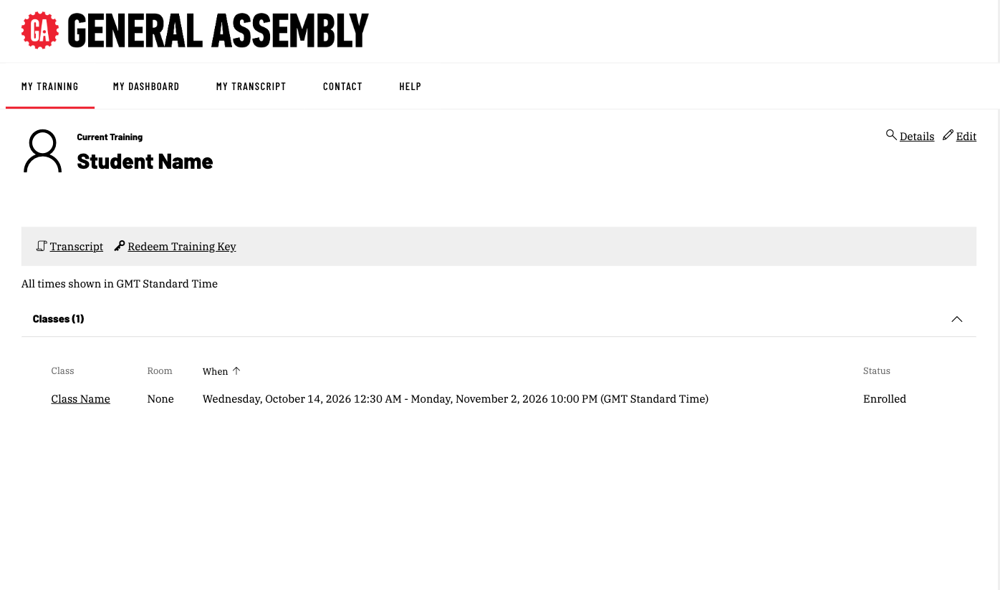

Students never see Skillable Studio, where labs are built. Their whole world is the TMS website and the lab window it opens.
The journey at a glance
- Get access from GA. Login details, or a training key to register with.
- Run the tech check. Sign in to TMS and run Skillable’s connection test.
- Sign in to Skillable TMS. Go to the TMS sign-in page and enter the details from GA.
- Set a new password. TMS prompts for this on first sign-in.
- Open the class from the dashboard. The labs are listed inside it.
- Launch the lab. It opens in a new browser window.
How learners get access
GA sets up access in one of two ways. The program team decides which, before launch.
- GA enrolls learners from a roster CSV. GA creates each learner’s account and enrolls them in the class before day one. Each learner gets a username (their email) and a temporary password.
- Learners self-enroll with a training key. GA gives the client a class code. Each learner registers on the TMS sign-in page, creates their own account and is enrolled in the class. This suits very large groups.
Each option has pros and cons:
| Roster CSV | Self-enrollment (training key) | |
|---|---|---|
| Pros | A clean roster before day one. Little follow-up | Less setup. Scales to very large groups |
| Cons | More work up front collecting names and emails | Risk of typos in codes, names and emails, and duplicate accounts. More follow-up to check everyone registered |
Either way, only learners with the Enrolled status can launch labs once class starts. How CSMs set up each option: How learners get enrolled.
Good to know
Each email address can only be used for one TMS account. If a learner’s email changes, tell the CSM rather than letting them create a new account.
Before day one: the tech check
Two things, five minutes.
- Can the learner sign in to TMS? (This confirms the account works.)
- Does Skillable’s connection test pass on their network and browser? Run it at .
Common blockers on corporate laptops are VPNs, proxy restrictions and browser extensions that block pop-ups. The lab opens in a new window, so pop-ups must be allowed for the TMS site.

assets/screens/speed-test-result.png
assets/screens/popup-blocked.pngGood to know
The tech check doesn’t need the learner to launch the real lab. TMS access plus the connection test is enough.
Signing in for the first time
- Go to the TMS sign-in page:
- Select Sign In.
- Enter the email and temporary password from GA.
- TMS prompts for a new password. Set it and keep it somewhere safe.
- Land on the Student Dashboard.

assets/screens/tms-sign-in.png
assets/screens/tms-change-password.png
assets/screens/tms-student-dashboard.pngChanging the password signs the learner out straight away. That’s expected. They sign back in with the new one.
Finding the class
- From the dashboard, open the Classes tab.
- The class appears with its name and dates.
- Select the class to open the enrollment, which lists the labs (shown as Activities).

assets/screens/tms-student-classes.pngIf the class is missing
If a learner sees no class, the usual causes are a different email than the one GA enrolled, or the class not yet having started. Labs become available when the class starts.
Which labs learners can see
This is set per program. The program team chooses one of these before launch.
| Option | What the learner sees | Pros | Cons |
|---|---|---|---|
| A. One lab at a time | Only the current session’s lab | Simple, no wrong-lab launches, protects future content | Ops must release each lab on schedule |
| B. All labs visible | Full list for the course | Learners can preview and orient | Risk of launching the wrong lab and using lab hours |
| C. Hybrid | Current lab plus past labs | Easy review, protects future content | Same release overhead as A |
Whichever option a program uses, instructors tell learners at the start of each session exactly which lab to launch.
Launching a lab
- Select Launch next to the lab.
- The lab opens in a new browser window.
- It may take a minute or two to start the machine.
- A timer shows how long the lab has left.

assets/screens/tms-enrollment-activities.pngEncourage learners to launch a few minutes before the session starts.
Inside the lab window
The window has two halves:
- Instructions pane: steps, pages, check boxes, questions and clickable text.
- Machine pane: the virtual machine itself (desktop, terminal, VS Code).
Features learners will see:
- Click-to-type text sends a command straight into the machine. Click it rather than retyping.
- Click-to-copy text copies to the clipboard.
- Task check boxes track progress.
- Check / Evaluate buttons test whether a step was done correctly.
- Next / Previous move between instruction pages.

assets/screens/lab-window-full.png
assets/screens/lab-instructions-closeup.pngLeaving a lab: the Exit menu
| Option | What happens | When to use it |
|---|---|---|
| Save and Close | Lab is kept; learner resumes later from where they left off | Only on labs where saving is turned on |
| End: mark complete | Lab is finished and the machine is deleted | Done with the lab |
| Cancel | Work is discarded; next launch starts fresh | Want to start over |
Golden rule: before leaving any lab, commit and push code to GitHub.

assets/screens/lab-exit-menu-save.png
assets/screens/lab-exit-menu-end-only.pngNot every lab offers Save. If a learner only sees End, that lab can’t be saved and everything on the machine goes when it closes.
What happens if…
| Situation | What happens |
|---|---|
| Learner closes the browser tab | Lab keeps running (60 minutes by default); they can relaunch from TMS |
| Learner walks away | After 15 minutes idle (by default), the lab warns and then shuts down |
| Laptop loses power or Wi-Fi drops | Same as walking away. Reconnect promptly |
| Lab timer runs out | Lab ends. Unsaved work on the machine is lost |
The safe habit: push to GitHub at every natural break, not just at the end of the day.
Getting help
- In session: ask the instructor. They can see the lab and take control of it to help.
- Out of session: contact the program’s CSM.
- Lab won’t load at all: check , then contact the program’s CSM.
Learners should come to GA first, not Skillable. We own the class, the accounts and the lab configuration.